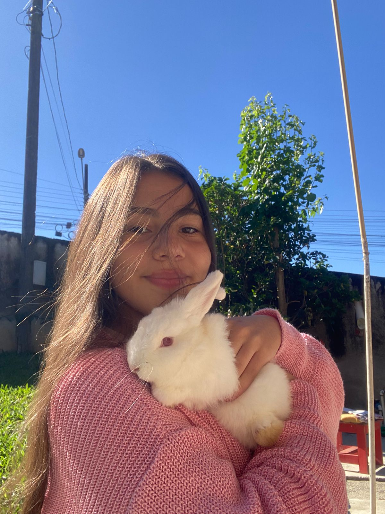
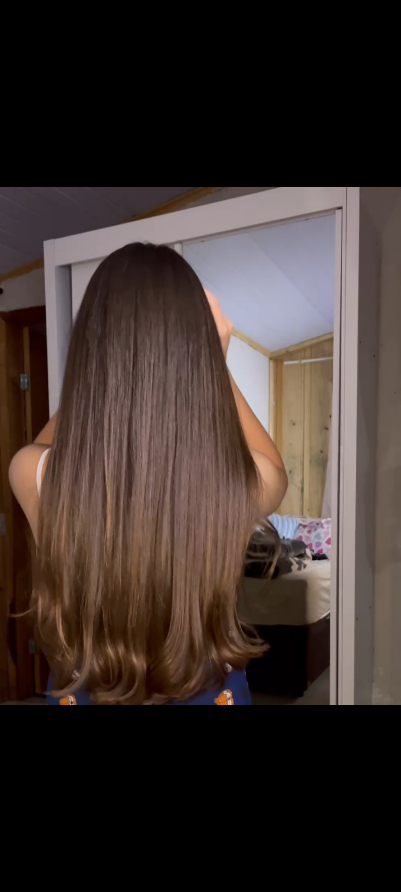

Dicas simples para cuidar do seu cabelo e deixar seus fios ainda mais bonitos.
Aqui você encontra dicas, cuidados e informações para manter o cabelo bonito, saudável e bem cuidado.
Aprenda como hidratar e cuidar dos seus fios.
Veja como proteger o cabelo do calor.
Confira dicas para lavar os fios corretamente.
Descubra como manter as pontas bonitas.
Monte uma rotina simples para o seu cabelo.
Cuide dos seus fios e ame o seu cabelo.

A hidratação é um dos cuidados mais importantes para manter o cabelo bonito, macio e saudável.
A hidratação ajuda a repor água nos fios, deixando o cabelo mais macio, brilhoso e com uma aparência mais saudável.
Ela pode ajudar a diminuir o ressecamento, o frizz e o aspecto áspero dos fios. Também deixa o cabelo mais leve e fácil de cuidar.
A frequência depende das necessidades de cada cabelo. Para muitas pessoas, fazer hidratação cerca de uma vez por semana pode ser uma boa forma de manter os fios bem cuidados.
Não é necessário usar uma grande quantidade de produto. O mais importante é escolher uma máscara adequada para o seu tipo de cabelo e manter uma rotina de cuidados.